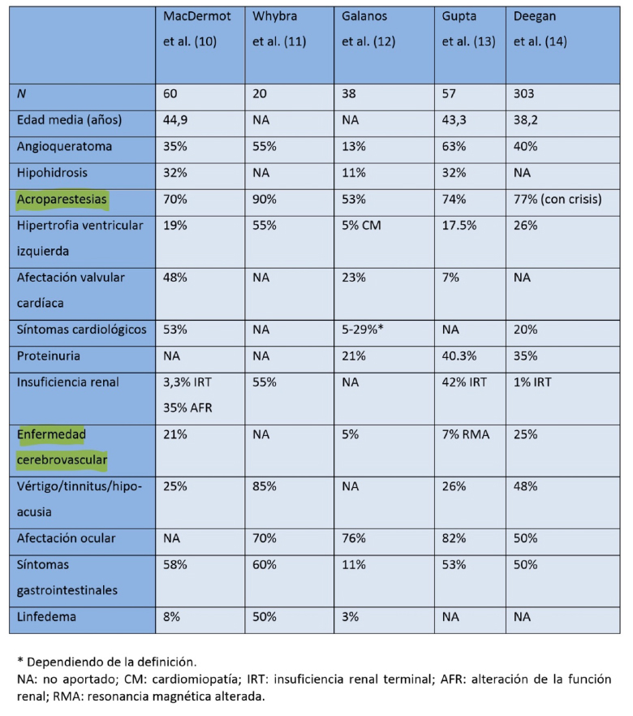

<div class="pages">
  <div data-page="projects" class="page no-toolbar no-navbar">
    <div class="page-content">
    
     <div class="navbarpages">
       <div class="navbar_home_link"><a href="toogle.html"></a></div>
       <div class="navbar_page_center"><b>Especialidades</b></div>
       <div class="menu_open_icon_white"><a href="#" class="open-panel"></a></div>
     </div>
     <div id="pages_maincontent">

          <h2 class="page_subtitle">Enfermedad de Fabry</h2>
          <p><b>Autor/a:</b> Rafael Huertas Arroyo, Neurología, Hospital La Mancha-Centro, Alcázar de San Juan (C. Real)</p>
          <div class="page_single">         
              <div class="buttons-row">
                    <a href="#tab3" class="tab-link active button">Introducción</a>
                    <a href="#tab5" class="tab-link button">Clínica</a>
                    <a href="#tab6" class="tab-link button">Diagnóstico</a>
              </div>
              <div class="separadormenu_div"></div>
              <div class="buttons-row">
                    <a href="#tab7" class="tab-link button">Tratamiento</a>
                    <a href="#tab8" class="tab-link button">Bibliografía</a>
              </div>
              
              <div class="tabs-simple">
                    <div class="tabs">
                          <div id="tab3" class="tab active">
                          		<br />
                                <h4>Introducción</h4>
                                <p class="justify">
                                	Descrita simultánea e independientemente por los dermatólogos Johan Fabry en Alemania y Willian Anderson en Gran Bretaña en 1898. No fue hasta 1947 que no se sugirió una fisiopatología de depósito. En 1963 que se identificó ese depósito como glucoesfingolípidos y podo después el déficit de la enzima alfa-galactosidasa A. <br /><br />
                                    
                                    El déficit enzimático determina el depósito de sustrato glucoesfingolípido (Gb3 y otros) a nivel lisosomal, intra y extracelularmente de forma multistémica. No hay relación entre la magnitud de los depósitos tisulares y la clínica por lo que su monitorización tiene escaso valor para el seguimiento de la enfermedad ni para valorar la respuesta al tratamiento (1). El depósito de Gb3 desencadena una respuesta inflamatoria y estado protrombótico (2) con alteración de la reactivad vascular. Todo ellos determina la afectación vascular clásica de la enfermedad.<br /><br />
                                    
                                    Su incidencia no se conoce bien; se han publicado prevalencia de 1/476.000 (3) en su forma clásica entrando en la categoría de enfermedad rara o poco frecuente, pero esta prevalencia es mayor en ciertas poblaciones de riesgo, (HVI, diálisis o ictus)<br /><br />
                                    
                                    El déficit de alfa-galactosidasa A tiene una herencia ligada al cromosoma X donde se localiza el gen GLA en posición 22.1 del brazo largo. Esta herencia hace que los hijos de una mujer afecta tengan un 50% de probabilidades de heredar la enfermedad y que un varón afecto solo pueda trasmitirlo a sus hijas pero con una probabilidad del 100%.
                                    No debe considerarse una enfermedad recesiva pues las mujeres con solo un X mutado pueden presentar un espectro clínico tan severo como el de los varones. Otras, por el contrario, están levemente afectas. Esta gran variabilidad es debido a lyonización o inactivación al azar en la vida fetal de uno de los cromosomas X. Si se inactiva el cromosoma mutado la línea celular será poco afecta y al contrario.<br /><br />
                                    
                                    La clínica es muy variada como es propio de una enfermedad multisistémica. Es necesario conocer la cronología de la misma para poder sospechar el diagnóstico.
                                </p>
                          </div>

    						<div id="tab5" class="tab">
                          		<br />
                                <h4>Clínica</h4>
                                <p class="justify">
                                	<b>AFECTACIÓN CARDIACA</b><br />
                                	De debut clínico tardío con respecto a otras manifestaciones de la enfermedad, 30-40 años en varones algo más en mujeres. Se debe al depósito de Gb3 en los miocardiocitos,
cel del tejido de conducción y fibroblastos del tejido valvular, así como en células endoteliales. Dicho depósito no justifica por si solo toda la afectación del órgano por lo
que se han implicado mecanismo inflamatorios concurrentes al mismo. Por orden de frecuencia los síntomas de origen cardiaco son: disnea, angina, palpitaciones y síncope.
                                </p>
                                
                                <blockquote class="sin">
                                <p class="justify">
                                	<b>AFECTACIÓN MIOCÁRDICA:</b><br />
                                	La típica del Fabry, la hipertrofia ventricular izquierda (HVI) no explicada por otras causas: HTA, estenosis aórtica o por mutaciones de genes sarcoméricos. Aparece en el 53% de los varones no tratados (4). La E de Fabry supone entre el 0,5-1% (0,5-12% según los estudios) de las HVI de etiología desconocida. La hipertrofia es concentrica sin obstrucción del tracto de salida del VI. Se manifiesta con disnea, angina y palpitaciones. El Dx se hace con los métodos habituales, el EKG no aporta datos específicos, tampoco el ECO TT si no se añade el Doppler Tisular y el análisis de deformidad tisular (Strain) mediante Speckle tracking que permite detectar incluso afectación cardiaca cuando no hay HVI. La RM permite identificar fibrosis mediante realce tardío con gadolinio que característicamente afecta a segmentos basales y medios de caras anterior e inferolateral con respeto del endocardio (5). La presencia de fibrosis implica daño irreversible al tratamiento (6). Con secuencias T1 Mapping puede detectarse el depósito lipídico y distingir la HVI del Fabry de otras etiologías (7).En cuanto a marcadores el propéptido natriurético cerebral N-terminal (NT-ProBNP) es el más útil de daño precoz correlacionándose con la disfunción diastólica y la dilatación auricular (8). La biopsia endomiocárdica no suele ser necesaria para el diagnóstico con un patrón típico pero no patognomónico de vacuolas perinucleares que se tiñen con ac. Peryodico de Schiff y Sudan negro al MO así como cuerpos de mielina y vesiculas llenas de laminar concéntrico al ME (9).
                                </p>
                                </blockquote>
                                
                                <blockquote class="sin">
                                <p class="justify">
                                	<b>TEJIDO DE CONDCUCCIÓN:</b><br />
                                	El hallazgo más precoz es la bradicardia sinusal. El PR corto en el EKG por conducción AV acelerada que también es un hallazgo precoz va dejando paso al escenario opuesto: bloqueos, enlentecimiento de conducción y trastorno de la conducción AV. La FA está presenta en el 17% de los pacientes con prevalencia 4 veces superior a la población de su edad (10). 6% requiere la implantación de marcapasos (25 veces superior a la población general), siendo la causa más importante la enfermedad del nodo sinusal y el bloqueo AV (11).
                                </p>
                                </blockquote>
                                
                                <blockquote class="sin">
                                <p class="justify">
                                	<b>CARDIOPATÍA ISQUÉMICA:</b><br />
                                	Entre un 13-25% presentan dolor torácico con coronarias normales, por lo que fisiopatológicamente la clínica isquémica se relaciona con afectación microangipática con flujo lento y reserva de flujo coronario menor (12). Su desarrollo precede la HVI. Puede dar un aumento mantenido de los niveles de troponina I ultrasensible (13)
                                </p>
                                </blockquote>
                                <blockquote class="sin">
                                <p class="justify">
                                	<b>VALVULOPATÍA:</b><br />
                                	La válvula más afectada es la aórtica siendo la Iª el daño más frecuente (14). Está presente en el 14.6% de los paciente (15)
                                </p>
                                </blockquote>
                                <p class="justify">
                                	TRATAMIENTO ENZIMÁTICO SUSTITUTIVO<br />
                                	Debe iniciarse antes de aparezcan los daños irreversibles, por tanto está indicado en el momento que se aprecia afectación de este órgano diana. Disminuye el acúmulo de Gb3 (16) provocando un descenso de la masa ventricular, el grosor septal, función ventricular y de la tolerancia al ejercicio (6). La presencia de fibrosis es un marcador de mala respuesta al tratamiento.
                                </p>
                                <p class="justify">
                                	<b>AFECTACIÓN RENAL</b><br />
                                	Más frecuente y precoz en hombres: 11 vs 17% 31 vs 23 años en el Fabry Registry (17). En registros de pacientes sometidos a TES la prevalencia de la enfermedad entre enfermos en diálisis era de 0,3% en varones y 0,1% en mujeres y entre los trasplantados de 0,24% en varones.<br /><br />
                                    
									Conduce a una nefropatía proteinúrica progresiva de origen metabólico relacionada con el depósito desde la etapa fetal de Gb3 a nivel de podocitos, donde condicionan una respuesta apoptótica, fibrosa e inflamatoria fundamental para el daño renal incluso mayor que la afectación endoteliar. Otros puntos de depósito son mesangio, endotelio capilar glomerular, epitelio tubular, endotelio y capa muscular vascular así como de células intersticiales. Inicialmente se aprecia una isostenuria, signos de disfunción tubular y microalbuminuria, para posteriormente dar paso a proteinuria con descenso del filtrado glomerular (FG). La proteinuria en rango nefrótico es rara (7,3% varones y 3,6% mujeres) en la serie Fabry Registry. La HTA es poco prevalente por la confluencia frecuente de disfunción autonómica lo que dificulta en ocasiones la terapia coadyuvante con IECAs o ARA II. En el sedimiento urinario podemos encontrar cuerpos ovales grasos y gotas lipídicas.<br /><br />

No se conoce bien la velocidad de progresión. En la forma clásica es frecuente llegar a estadios terminales entre la cuarta y quinta década. Una vez instaurada la insuficiencia renal la progresión a un estadio severo puede ser más rápida: si el FG es > 60ml/min/1,73m2 la tasa era de -3 y -0,9 ml/min/1,73m2 al año en varones y mujeres respectivamente, pero si el FG era < 60 la progresión era mayor a razón de -6,8 y -2,1 ml/min/1,73m2 en varones y mujeres respectivamente al año (18). La HTA y la proteinuria >1g/24h son factores de riesgo independientes en la progresión a ERC.<br /><br />

La BIOPSIA RENAL es útil para confirmar el diagnóstico, pues establece el grado de severidad determinando el porcentaje de esclerosis glomerular y excluye otras lesiones glomerulares. Típicamente hallamos células espumosas en el glomérulo en MO y depósitos lisosomales como cuerpos cebra o en forma de cebolla en la ME. <br /><br />

La presencia de afectación renal es un factor de riesgo de padecer afectación cardiaca o ictus.
                                </p>
                                <p class="justify">
                                	TRATAMIENTO ENZIMÁTICO SUSTITUTIVO<br />
                                	Debe iniciarse lo más precozmente posible pues es eficaz ralentizando el deterioro renal. Es capaz de disminuir e incluso revertir la microalbuminuria pero la prsencia de una proteinuria >1g/día, el FG&lt;60ml/min/1,73m2 y la glomeruloesclerosis segmentaria focal >50% son signos de mala respuesta al tratamiento. En Diálisis y Trasplante no está claro el beneficio en reducción de morbimortalidad cardio y cerebrovascular, pero su uso mejora el dolor neuropático y la progresión de la HVI en estos pacientes. Su tolerancia es buena.
                                </p>
                                <p class="justify">
                                	TRATAMIENTO GENERAL DE LA PROTEINURIA<br />
                                	Indicados ARA II e IECAs si la TA lo permite. El tratamiento óptimo debe conseguir proteinuria < 500mg/día y cifras tensionales &lt;130780 La nefropatía en la E de F no recurre en el transplante y la supervivencia del injerto a los 5 años es similar al de resto de pacientes, aunque la del paciente sea menor por eventos cardiovasculares.
                                </p>
                                <p class="justify">
                                	<b>AFECTACIÓN NEUROLÓGICA</b><br />
                                	Por afectación del SNP o del SNC. El primero es más precoz, siendo características las crisis de dolor agudo en la infancia denominadas CRISIS DE FABRY: accesos de dolor episódico, severo, tipo urente que dura minutos, horas e incluso días con inicio acro y extensión proximal. Se precipitan por el cansacion, el estrés, fiebre o temperatura ambiente elevada. Puede cursar con fiebre y elevación de reactantes de fase aguda. Tienden a disminuir con la edad, dado paso a un dolor CRONICO más continuo y sordo. En ocasiones la clínica no es álgica, sino parestésica, también acra. La EN es anodina en estas fases y el electroneurograma (ENG) no dirigido puede ser normal por no testar las fibras finas (C amielínicas y Adelta) afectas. <br /><br />

La afectación del SNC es más tardía, especialmente en mujeres. Los paciente con Fabry tienen un riesgo de ictus (isquémico y hemorrágico) 20 veces superior a la población normal (18). Su etiopatogenia se relaciona con el depósito de Gb3 en endotelio, miocitos de pared vascular… con la disfunción endotelial un estado protrombótico y alteración de la reactividad vascular. También contribuye la presencia de HTA, arrimias… Los ictus tienen predilección por el sistema vertebrobasilar y ser de tipo lacunar (afectación de la microcirculación) pero pueden ser de cualquier tipo y localización.<br /><br />

La imagen con RM muestra una leucopatía inespecífica que precede en años a la expresión clínica. Como hallazgos más específicos pero infrecuentes tenemos la dolicoestesia basilar con un valor predictivo positivo del 87% (19) y la hiperintensidad del núcleo pulvinar talámico en T1 por mineralización del mismo (20)
                                </p>
                                <p class="justify">
                                	<b>AFECTACIÓN DIGESTIVA</b><br />
                                	Se inicia a edades pediátricas y se relaciona con el depósito de Gb3 en el SN Autónomo, mucosa del intestino delgado y plexos mioentéricos, vasos mesesntéricos. Aquejan molestias postprandiales, sacieda precoz, dolor abdominal cólico, N y vómitos y diarrea ocasional. Hiporexia secundaria.
                                </p>
                                <p class="justify">
                                	<b>AFECTACIÓN DE PIEL Y ANEJOS</b><br />
                                	Los angioqueratomas aparecen en la niñez o en la adolescencia temprana. Son ectasias de color tinto-azulado por depósito de Gb3 en los vasos dérmicos. Aparecen de forma aislada o confluyente en región inferior del tronco, nalgas y zona genital.<br /><br />
La hipo-anhidrosis por afectación de glándulas sudoríparas también es precoz y casi constante originando intolerancia al ejercicio y a entornos calurosos.
                                </p>
                                <p class="justify">
                                	<b>AFECTACIÓN OCULAR</b><br />
                                	Queratopatía secundaria al depósito de Gb 3 en las células del epitelio basal que dan lugar a la córnea verticillata. Hallazgo muy característico (yatrogenia por amiodarona y cloroquina en el diagnóstico diferencial) y precoz solo visualizable en la lámpara de hendidura, no altera la visión. Se relaciona con la severidad de la enfermedad (21)<br /><br />
									La catarata subcapsular posterior o catarata Fabry es patognomónica.
                                </p>
                                <p class="justify">
                                	<b>AFECTACION AUDITIVA Y VESTIBULAR</b><br />
                                	La hipoacusia neurosensorial progresiva es relativamente frecuente. A veces se presenta como sordera súbita. Los acúfenos y el vértigo periférico también son más frecuentes en estos pacientes que en la enfermedad general. Es un marcador de riesgo de sufrir afectación cardiaca, renal o ictus (22).
                                </p>
                                <p class="justify">
                                	<b>AFECTACION RESPIRATORIA</b><br />
                                	En forma de disnea, tos o sibilancias por depósito de Gb3 en las células epiteliales bronquiales que condicionan un patrón obstructivo. La afectación es progresiva y dependiente de edad y sexo, siendo más frecuente y precoz en varones. (23)
                                </p>
                                <p class="justify">
                                	<b>AFECTACION DEL APARATO LOCOMOTOR</b><br />
                                	Síntomas musculares como mialgias, calambres y debilidad por depósito de Gb3 en músculo a nivel subsarcolémico y en vascularización con reemplazo de fibras musculares por tej adiposo.
                                    La artropatía interfalángica distal de manos deformante es la afectación articular más frecuente; la osteopenia, osteoporosis e incluso la necrosis avascular ósea también se han descrito.
                                </p>
                                <p class="justify">
                                	<b>AFECTACION PSIQUIÁTRICA y OTRAS</b><br />
                                	Trastornos afectivos con depresión (15-62%) con componente en parte reactivo a su situación clínica (dolor...)<br />
									Los rasgos dismórficos faciales le confieren un aspecto acromegaloide con prognatismo y dismorfia facial.<br />
									Otros como hipotiroidismo, anemia que no puede atribuirse a la función renal
                                </p>
                                <p class="justify">
                                	<b>PECULIARIDADES DE LA ENFERMEDAD DE FABRY EN LA MUJER</b><br />
                                	Clásicamente considerada portadora se sabe que puede presentar afectación tan florida y severa como el varón (24,25,26,27,28,29,30,31y1), pero lo suelen hacer más tardíamente (10 años con respecto a varones (28,29,30,31y1)<br /><br />
                                    
                                    <br />
                                    El diagnóstico presenta unas peculiaridades que lo dificultan, pues hasta el 40% presentan una actividad enzimática residual en leucocitos normal (32), lo que no excluye que puedan presentar clínica. Por tanto su diagnóstico requiere la secuenciación del gen GLA. Los niveles de Gb3 en suero pueden ser normales, en orina suelen estar aumentados (33), y la Liso-Gb3 (metabolito desacilado de la Gb3) suele estar aumentada.
Responden a la TES de forma similar a los varones mejorando el dolor, estructura y función cardiaca, función renal y mejorando la calidad de vida. La tolerancia también es buena sin peculiaridades. Por tanto sus criterios de indicación son similares a los del varón.
                                </p>
                          </div>
                          <div id="tab6" class="tab">
                          		<br />
                                <h4>Diagnóstico</h4>
                                <p class="justify">
                                    &bull;&nbsp; <b>CLÍNICO:</b> Hay que conocer la clínica más frecuente en cada rango de edad para poder diagnosticar la enfermedad. Así en la infancia es más frecuente el dolor agudo (crisis de Fabry) o crónico (acroparestesias de palmas y plantas ascendentes), los angioqueratomas y la cornea verticillata. En la Juventud son los anguioqueratomas, la microalbuminuria, la fiebre, el dolor abdominal y la
hipohidrosis. Finalmente en la edad adulta aparece la afectación renal, cardiaca y el ictus.<br /><br />
Los signos y síntomas más constantes son: DOLOR NEUROPÁTICO, ANGIOQUERATOMAS y posteriormente la afectacion cardiaca, renal y el ictus.
                                </p>
                                <p class="justify">
                                    &bull;&nbsp; <b>LABORATORIO:</b> La alfa galactosidasa A es una enzima lisosomal encargada de romper la porción alfa-galactosilo terminal de la globotriaosilceramida (Gb3) en galactosa y lactocylceramida. Su actividad puede medirse en leucocitos, fibroblastos y plasma. En varones con fenotipo clásico la actividad enzimática residual en &lt;10%. Las formas atípicas pueden tener actividad más elevada, llegando a ser normal hasta en un 40% de las mujeres. Por ello es recomendable realizar una secuenciación completa del GEN GLA.<br /><br />
                                    <br />
                                    El GEN GLA esta situación en posición 22.1 del brazo largo de cromosoma X. Tiene 7 exones. Su análisis completo resulta bastante complejo habiendo descritas más de 800 variantes de las que el 70% son puntuales y un 20% reordenamientos. Las mutaciones en su mayoría son privadas o familiares lo que nos obliga a estudiar todo el gen. Entre un 5-10% son mutaciones de novo. Hay polimorfismos que aumentan (g.1150G>A)(34) y disminuyen (g.1170C>T)(35) la actividad de la enzima. Se deben secuenciar todos los exones, nexos exónintrón y zona promotora. También conviene analizar las zona sintrónicas si no se ha localizado la mutación. No hay puntos calientes pero las mutaciones son algo más frecuentes en el exón 5-6 y algo menos en el 4. <br /><br />
                                    
Todo esto puede realizarse mediante la elución de una gota de sangres seca recogida en papel de filtro FTA que lisan las células y protegen los ac. Nucleicos de las nucleasas, la oxidación y los daños UV. También inactivan los patótenos hemáticos. <br /><br />

No se conocen buenos biomarcadores para la enfermedad de Fabry. La Liso-Gb3 se encuentra elevada en plasma de varones y en menor medida de mujeres y se relaciona con la graveda de la enfermedad (36). La Gb3 es mucho más variable pudiendo ser normal en mujeres. La quitotriosidasa puede estar elevada en varones pero no en mujeres.<br /><br />

El diagnóstico definitivo de FABRY se establece ante la presencia de un fenotipo clásico con al menos uno de estos hallazgos: acroparestesias, angioqueratomas córnea verticilata.
                                </p>
                                <p class="justify">
                                    <b>PROGRAMAS DE CRIBADO</b> <br />
                                    Si bien la enfermedad de Fabry en su fenotipo clásico presenta prevalencias propias de una enfermedad rara o infrecuente en ciertos grupos de riesgo la prevalencia es mucho mayor.<br /><br />
El cribado teniendo en cuenta únicamente la microalbuminuria o la proteinuria franca es poco rentable por la gran cantidad y variedad de enfermedades renales que pueden producirlas, no obstante en si el enfermo presenta HVI asociada su rentabilidad aumenta. También en los enfermos con enfermedad renal crónica, concretamente en fase de diálisis donde la prevalencia en un grupo español fue del 18.5% (37). Dichas cifras caen mucho en los programas realizados en trasplantados donde no superaban el 0,018% (38).<br /><br />

En los enfermos con HVI no explicada por postcarga la prevalencia se asume es del 0.5-1%, por lo que en esta población los programas de búsqueda también son rentables.<br /><br />

En los pacientes jóvenes (< 55 años) con ictus isquémico de etiología lacunar o territoriales criptogénicos la prevalencia se estima en torno al 1%, y su búsqueda también es rentable.<br /><br />
Otros hallazgos como la córnea verticillata o los angioqueratomas aportan peores cifras.<br />
El cribado neonatal puede ser de utilidad para detectar formas atípicas de la enfermedad.
                                </p>
                          </div> 
                          
                          <div id="tab7" class="tab">
                          		<br />
                                <h4>Tratamiento Enzimático Sustitutivo</h4>
                                <p class="justify">
                                Desde 2001 está disponible la alfa-galactosidasa A comercializada como <br />
                                <b>Alfa. Replagal – Shire</b>, se preoduce a partir de líneas celulares humanas. Dosis de 0.2mg/k peso cada 2 semanas. Su infusión es más rápida: 40 min.<br />
                                <b>Beta. Fabrazyme – Genzyme</b>, se produce a partir de células de ovario de hámster chino. Dosis de 1mg/k peso cada 2 semanas. Su infusión es más lenta, sobre todo al principio, pudiendo llevar hasta 300min <br /><br />
                                En Europa están disponibles las dos, en USA solo la beta. Sendas han demostrado reducir los depósitos de Gb3 (salvo en SNC pues no atraviesa BHE) y mejorar la clínica neuropática, gastrointestinal, sudoración, audición y la calidad de vida en general, además de disminuir las incidecia de complicaciones cardiacas, renales y cerebrovasculares. No es efectiva cuando el daño del órgano diana es irreversible: proteinuria franca, fibrosis cardiaca... por lo que su instauración debe hacerse lo más precozmente posible. Buena tolerancia, en ocasiones se objetiva un síndrome pseudogripal en las primeras infusiones que puede tratarse con analgesia y antihistamínicos. Sus dos grandes indicaciones son:<br />
                                - Mejorar la calidad de vida en pacientes con dolor o síntomas gastrointestinales<br />
                                - Afectación de un órgano diana mayor: riñón, corazón o SNC.

                                </p>
                          </div> 
                          <div id="tab8" class="tab">
                          		<br />
                                <h4>Bibliografía</h4>
                                <p class="justify">
                                1. Vedder AC, Linthorst GE, van Breemen MJ, et al. The Dutch Fabry cohort: diversity of clinical manifestations and Gb3 levels. J Inherit Metab Dis. 2007; 30(1):68-78 <br /><br />
                                2. Shen JS, Meng XL, Moore DF, et al. Globotriaosylceramide induces oxidative stress and upregulates cell adhesion molecule expression in Fabry disease endothelial cells. Mol Genet Metab. 2008;95(3):163-8. <br /><br />
                                3. Poorthuis BJ, Wevers RA, Kleijer WJ, Groener JE, de Jong JG, van WS, et al. The frequency of lysosomal storage diseases in The Netherlands. Hum Genet. 1999;105(1-2):151-6. <br /><br />
                                4. Elliott P, Baker R, Pasquale F, et al. Prevalence of Anderson-Fabry disease in patients with hypertrophic cardiomyopathy: the European Anderson-Fabry Disease survey. Heart.  <br /><br />2011;97(23):1957-60. <br /><br />
                                5. Niemann M, Herrmann S, Hu K, et al. Differences in Fabry cardiomyopathy between female and male patients: consequences for diagnostic assessment. JACC Cardiovasc Imaging. 2011;4(6):592-601 <br /><br />
                                6. Weidemann F, Niemann M, Breunig F, et al. Long-term effects of enzyme replacement therapy on fabry cardiomyopathy: evidence for a better outcome with early treatment. Circulation. 2009;119(4):524-9. <br /><br />
                                7. Sado DM, White SK, Piechnik SK, et al. Identification and assessment of Anderson-Fabry disease by cardiovascular magnetic resonance noncontrast myocardial T1 mapping. Circ Cardiovasc Imaging. 2013;6(3):392-8. <br /><br />
                                8. Coats CJ, Parisi V, Ramos M, et al. Role of serum N-terminal pro-brain natriuretic peptide measurement in diagnosis of cardiac involvement in patients with anderson-fabry disease. Am J Cardiol. 2013;111(1):111-7. <br /><br />
                                9. Pieroni M, Chimenti C, De Cobelli F, et al. Fabry's disease cardiomyopathy: echocardiographic detection of endomyocardial glycosphingolipid compartmentalization. J Am Coll Cardiol. 2006;47(8):1663-71. <br /><br />
                                10. Shah JS, Hughes DA, Sachdev B, et al. Prevalence and clinical significance of cardiac arrhythmia in Anderson-Fabry disease. Am J Cardiol. 2005;96(6):842-6.  <br /><br />
                                11. O'Mahony C, Coats C, Cardona M, et al. Incidence and predictors of anti- bradycardia pacing in patients with Anderson-Fabry disease. Europace. 2011;13(12):1781-8. <br /><br />
                                12. Elliott PM, Kindler H, Shah JS, et al. Coronary microvascular dysfunction in male patients with Anderson-Fabry disease and the effect of treatment with alpha galactosidase A. Heart. 2006;92(3):357-60 <br /><br />
                                13. Feustel A, Hahn A, Schneider C, et al. Continuous cardiac troponin I release in Fabry disease. PloS One. 2014;9(3): e91757 <br /><br />
                                14. Weidemann F, Strotmann JM, Niemann M, et al. Heart valve involvement in Fabry cardiomyopathy. Ultrasound Med Biol. 2009;35(5):730-5. <br /><br />
                                15. Linhart A, Kampmann C, Zamorano JL, et al. Cardiac manifestations of Anderson-Fabry disease: results from the international Fabry outcome survey. Eur Heart J. 2007;28(10):1228-35 <br /><br />
                                16. Eng CM, Guffon N, Wilcox WR, et al. Safety and efficacy of recombinant human alphagalactosidase A--replacement therapy in Fabry's disease. N Engl J Med. 2001;345(1):9-16 <br /><br />
                                17. Eng CM, Fletcher J, Wilcox WR, et al. Fabry disease: baseline medical characteristics of a cohort of 1765 males and females in the Fabry Registry. J Inherit Metab Dis. 2007;30(2):184-92. <br /><br />
                                18. Schiffmann R. Fabry disease. Pharmacol Ther. 2009;122(1):65-77  <br /><br />
                                19. Fellgiebel A, Keller I, Marin D, et al. Diagnostic utility of different MRI and MR angiography measures in Fabry disease. Neurology. 2009;72:63-8. <br /><br />
                                20. Moore DF, Ye F, Schiffmann R, Butman JA. Increased signal intensity in the pulvinar on T1-weighted images: a pathognomonic MR imaging sign of Fabry disease. Am J Neuroradiol. 2003;24:1096-101. <br /><br />
                                21. Pitz S, Kalkum g, Arash K, et al. Ocular signs correlate well with Disease Severity and Genotype in Fabry Disease. PLOS ONE. DOI: 10.1371/journal.pone.0120814 <br /><br />
                                22. Kamisky P, Noel E, Jaussaud R, et al. Multidimensional analysis of clinical symptoms in patients with Fabry’s disease. Int J Clin Pract. 2013;67:120-7. <br /><br />
                                23. Magage S, Lubanda JC, Susa Z, et al. Natural history of the respiratory involvement in Anderson-Fabry disease. J Inherit Metab Dis. 2007;30:790-9. <br /><br />
                                24. MacDermot KD, Holmes A, Miners AH. Anderson-Fabry disease: clinical manifestations and impact of disease in a cohort of 60 obligate carrier females. J Med Genet. 2001;38:769-75. <br /><br />
                                25. Whybra C, Kampmann C, Willers I, et al. Anderson-Fabry disease: clinical manifestations of disease in female heterozygotes. J Inherit Metab Dis. 2001;24:715-24. <br /><br />
                                26. Galanos J, Nicholls K, Grigg L, Kiers L, Crawford A, Becker G. Clinical features of Fabry's disease in Australian patients. Intern Med J. 2002;32:575-84. <br /><br />
                                27. Gupta S, Ries M, Kotsopoulos S, Schiffmann R. The Relationship of Vascular Glycolipid Storage to Clinical Manifestations of Fabry Disease. A Cross-Sectional Study of a Large Cohort of Clinically Affected Heterozygous Women. Medicine. 2005; 84:261-8. <br /><br />
                                28. Deegan PB, Baehner AF, Barba Romero M-A, Hughes DA, Kampmann C, Beck M. Natural history of Fabry disease in females in the Fabry Outcome Survey. J Med Genet. 2006;43:347-52.  <br /><br />
                                29. Wang RY, Lelis A, Mirocha, Wilcox WR. Heterozygous Fabry women are not just carriers, but have a significant burden of disease and impaired quality of life. Genet Med. 2007;9:34-45. <br /><br />
                                30. Kobayashi M, Ohashi T, Sakuna M, Ida H, Eto Y. Clinical Manifestations and natural history of Japanese heterozygous female with Fabry disease. J Inherit Metab Dis. 2008. Online report #003. DOI 10.1007/s10545-007-0740-6. <br /><br />
                                31. Wilcox RW, Oliveira JP, Hopkin RJ, et al. Females with Fabry Disease frequently have major organ involvement: Lessons from the Fabry Registry. Mol Genet Metab. 2008;93:112-28. <br /><br />
                                32. Linthorst GE, Poorthuis BJ, Hollak CE. Enzyme activity for determination of presence of Fabry disease in woman results in 40% false-negative results. J Am Coll Cardiol. 2008;51:2082. <br /><br />
                                33. Young E, Mills K, Morris P, et al. Is globotriaosylceramide a useful biomarker in Fabry disease? Acta Paediatr. 2005;94(Suppl 447):51-4 <br /><br />
                                34. Fitzmaurice TF, Desnick RJ, Bishop DF. Human Alpha-Galactosidase A: High Plasma Activity Expressed by the -30g-->a Allele. J Inherit Metab Dis. 1997;20:643-57. <br /><br />
                                35. Froissart R, Guffon N, Vanier MT, Desnick RJ, Maire I. Fabry disease: D313Y isan alphagalactosidase A sequence variant that causes pseudodeficient activity in plasma. Mol Genet Metab. 2003;80:307-14.<br /><br />
                                36. Rombach SM, Dekker N, Bouwman MG, et al. Plasma globotriaosylsphingosine: diagnostic value and relation to clinical manifestations of Fabry disease. Biochim Biophys Acta. 2010; 1802:741-8 <br /><br />
                                37. Herrera J, Clara Sa Miranda C. Prevalence of Fabry’s disease within hemodialysis patients in Spain Clinical Nephrology.2014; 81:112-120 <br /><br />
                                38. Tsakiris D, Simpson HK Jones EH, Briggs JD, Elinder CG, Mendel S, et al. Report on management of renal failure in Europe, XXVI, 1995: Rare diseases in renal replacement therapy in the ERA-EDTA Registry. Nephrol Dial Transplant 1996; 11 (Suppl 7):S4-S20 
                                </p>
                          </div> 
                    </div>
              </div>        
          </div>     
      </div>  
    </div>
  </div>
</div>